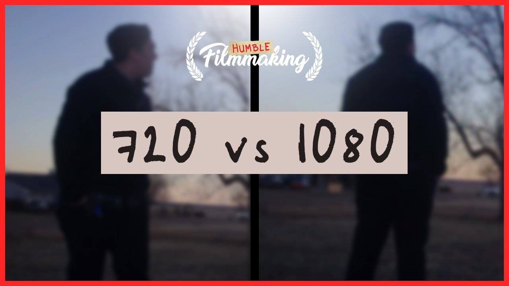

Como criar seu próprio Podcast
Você já pensou em criar um Podcast? Sim!! Bom então hoje é seu dia de sorte! hoje nós iremos te ensinar a começar do zero seu própio Podcast, sem gastar muito dinheiro, de forma simpres e facil, basta seguir os passos abaixo.
- Comprar um estudio em São Paulo, para facilitar o acesso dos convidados, e de preferência um de luxo!
- Contratar um equipe de pelo menos 100 funcionarios para, edição de vídeos, recepção dos convidos, etc...
- Comprar as melhores câmeras, microfones, tripés e baços articulados para os microfones.
- Ter um bar, com o máximo de bebidas e refrescos possivel, para o convidado se sentir avontade. obs: com uma bartender bonita!(Isso é importante!!)
- E por fim, criar um super senário, para deixar o fundo dos vídeos mais interesantes para quem está assistindo!
E se por a caso isso esteja fora do seu orçamento significa que você e uma pessoa comum, assim como eu, e eutras diversas pessoas, que no inicio de suas carreiras eram pobres, e tinham pouquisimas oportunidades, porém que depois de muito esfoço e dedicação conquistaram seus sonhos, e por isso, por mais que você ache que você nunca vai chegar lá, nunca desista, e sempre siga em frente, pois entre a fracasso e o sucesso existirão diversas derrotas, que por mais que pareçam, não serão o fim! Gostou? Eu achei isso na internet e achei bem legal 😂
Mas agora chega de brincadeira, casa você realmente queira criar seu própio podcast, crique no botão abaixo, que você será redirecionado para um curso compreto onde nós te ensinaremos a criar seu propio podcast do absoluto ZERO!!
CRIE SEU PRÓPIO PODCAST